· EEM312
EEM312 Sayısal Elektronik: Ara Sınavlar ve Çözümleri (2003–2006)
EEM312 – Sayısal Elektronik · 12.04.2003 · 16.10.2026
Bu yazı, Başkent Üniversitesi EEM312 Sayısal Elektronik dersinin (Prof. Dr. Emin Akata) 2003–2006 yıllarına ait beş ara sınavını çözümleriyle bir araya getiriyor: 1. ara sınav 2003, 1. ve 2. ara sınav 2004, 1. ara sınav 2005 ve 2006 ara sınavı. Sorular ve hocanın çözümleri yazıya döküldü; devre şekilleri görsel olarak eklendi. Orijinal Word dosyaları yazının sonunda ZIP olarak indirilebilir.
Çözümlerde kullanılan temel MOSFET bağıntıları (uzun kanal, k = ½ µC_ox W/L):
- Doyum: I_D = k (V_GS − V_T)² ya da I_D = (k′/2)(W/L)(V_GS − V_T)² (1 + λV_DS)
- Doğrusal (triode/resistive): I_D = k′(W/L) [(V_GS − V_T) V_DS − V_DS²/2]
- Gövde etkisi: V_T = V_T0 + γ (√(|−2φ_F| + V_SB) − √|−2φ_F|)
- Birleşik (unified) model: I_D = k′(W/L) [(V_GS − V_T) V_min − V_min²/2] (1 + λV_DS), V_min = min(V_GS − V_T, V_DS, V_DSAT)
2003 – 1. ara sınav (12.04.2003)
Soru 1 (20p)
- a) n bölgesi p'ye göre 10 kat fazla katkılı bir pn ekleminde kıtlık bölgesi hangi tarafta, hangi oranda geniştir? Yanıt: Daha az katkılı p tarafında; p tarafındaki genişlik n tarafının 10 katıdır.
- b) Şekil üzerinde V_OH, V_IH, V_OL ve V_IL seviyelerini gösteriniz (NM_H, V_OH ile V_IH arasında; NM_L, V_IL ile V_OL arasında).
- c) Intel P4 üretiminde değişken mi sabit maliyetler mi daha önemlidir? Yanıt: IC maliyeti = değişken maliyet + sabit maliyet / üretilen adet. Çok yüksek adette üretilen bir IC'de değişken maliyetler belirleyicidir.
- d) CMOS'un yaygınlaşmasının en öncelikli dört nedeni: (1) yaklaşık 0–V_DD arasında geniş V_sw; (2) kararlı durumda çıkış ile V_DD ya da toprak arasında her zaman sınırlı dirençli bir yol bulunması, dolayısıyla düşük çıkış empedansı (kΩ mertebesi) ve gürültüye az duyarlılık; (3) mükemmel yalıtılmış gate sayesinde çok büyük giriş empedansı ve kuramsal olarak sonsuz fan-out; (4) kararlı durumda V_DD ile toprak arasında doğrudan yol olmaması, yani statik güç tüketiminin olmaması.
Soru 2 (24p): MOSFET devreleri
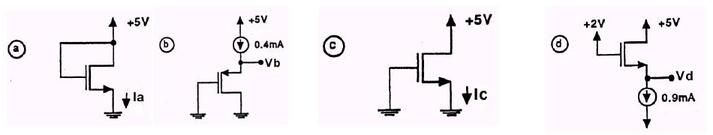
Tüm transistörler için |V_T| = 2 V, µ_nC_ox = 20 µA/V², W = 20 µm, L = 2 µm. Doyumda K = ½ × 20 × 10⁻⁶ × (20/2) = 100 µA/V² = 0,1 mA/V².
- a) V_DS = V_GS = 5 V, doyumda: I_D = 0,1 (5 − 2)² = 0,9 mA.
- b) V_DS = V_GS, doyumda (PMOS için V_T = −2 V): 0,4 = 0,1 (V_GS + 2)² ⇒ V_GS + 2 = ±2 ⇒ V_GS = 0 ya da −4 V. V_GS = 0 olamayacağından V_GS = −4 V ve V_b = 4 V.
- c) V_GS = 0, kesimde: I_c = 0.
- d) V_DG = 5 − 2 = 3 V olduğundan V_DS ≥ V_GS − V_T, doyumda: 0,9 = 0,1 (V_GS − 2)² ⇒ V_GS = 5 V; V_d = V_G − V_GS = 2 − 5 = −3 V.
Soru 3 (32p): Çalışma bölgesi tablosu
Tablodaki a–g transistörleri için boş gözleri doldurunuz (koyu olanlar yanıtlar):
| # | Kanal | V_T (V) | v_S (V) | v_G (V) | v_D (V) | Bölge |
|---|---|---|---|---|---|---|
| a | N | 1 | 0 | 3 | 2,1 | doyum |
| b | N | 2 | −2 | 2 | −0,1 | triode |
| c | P | −2 | 0 | −1 | −3 | kesim |
| d | P | −1 | 2 | 0 | −1 | doyum |
| e | N | 2 | −3 | 0 | ≥ −2 | doyum |
| f | P | −2 | 3 | 0 | −1 | doyum |
| g | P | −2 | 3 | ≥ 1 | −3 | kesim |
- a) V_DS = 2,1 V, V_GS = 3 V, V_GS − V_T = 2 V < V_DS ⇒ doyum; V_T > 0 ⇒ NMOS.
- b) V_DS = 1,9 V, V_GS = 4 V, V_GS − V_T = 2 V > V_DS ⇒ triode.
- c) V_GS = −1 V > V_T ⇒ kesim; V_T < 0 ⇒ PMOS.
- d) V_DS = −3 V, V_GS = −2 V, V_GS − V_T = −1 V > V_DS ⇒ doyum.
- e) V_GS = 3 V, V_GS − V_T = 1 V; doyum için V_DS ≥ 1 ⇒ V_D ≥ 1 + V_S = −2 V.
- f) V_DS = −4 V, V_GS = −3 V, V_GS − V_T = −1 V > V_DS ⇒ doyum.
- g) Kesim için V_GS ≥ V_T: V_G − 3 ≥ −2 ⇒ V_G ≥ 1 V.
Soru 4 (24p): PMOS ve yük doğrusu
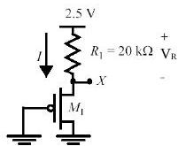
a) X geriliminin denklemi; b) |I_D|–|V_DS| eğrileri ve R1 yük doğrusu; c) L = 0,25 µm iken V_X = 1,5 V için W; d) hız doyumu olursa V_X nasıl değişir?
- a) X, PMOS'un source'udur ve V_DS = V_GS olduğundan transistör doyumdadır: I_D = −V_R / R = (k′_p/2)(W/L)(−V_X − V_Tp)².
- b) Yük doğrusu eksenleri I_D = 0 için V_DS = 2,5 V'ta, V_DS = 0 için I_D = 2,5 / 20 kΩ = 125 µA'de keser.
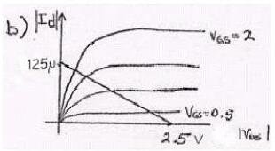
- c) V_R = 2,5 − 1,5 = 1 V; −1/(20 × 10³) = (−30 × 10⁻⁶ / 2)(W/0,25)(−1,5 + 0,4)² ⇒ W = 0,69 µm.
- d) Hız doyumunda transistörün akım sürme yeteneği azalır; R1 üzerinde daha az gerilim düşer ve V_X yükselir.
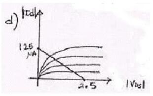
2004 – 1. ara sınav (17.04.2004)
Soru 1
- a) NMOS'ta doğrusal, doyum ve hız doyumu bölgelerinin I_D–V_DS grafiğinde ayrılması: sınırlar V_DS = V_GS − V_T ve V_DS = V_DSAT eğrileridir; V_DSAT = V_GS − V_T noktasından sonra hız doyumu başlar.
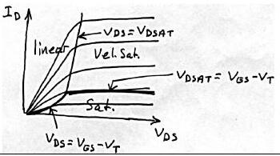
- b) Rejeneratif kapı: giriş nominal değerden düşük olsa da (geçerli bölgede kaldıkça) çıkış nominal değere yaklaşır; birkaç kademe sonra sinyal nominal değerine ulaşır. Bunun için geçiş bölgesindeki kazancın 1'den büyük, yani VTC eğiminin 45°'den dik olması gerekir.
- c) Kanal boyu modülasyonu: V_DS, V_GS − V_T'yi aştıkça kanalın etkin boyu biraz kısalır ve I_D biraz artar. I_D–V_DS eğrilerinde doyum bölgesindeki çizgilerin yatay yerine hafif yukarı eğimli olmasından anlaşılır.
- d) Sıcaklık değişimi ters kutuplanmış diyotu daha çok etkiler: terminal akımı (I = I_S − I_D) sıcaklığa duyarlı doyma akımından (azınlık taşıyıcıları) küçüktür; ileri kutuplamada ise büyük difüzyon akımı yanında I_S ihmal edilebilir.
- e) Yüksek pazar payı beklenen bir IC'de die, maske, tasarım ve paketleme maliyetlerinden hangileri en aza indirilmeli? Yanıt: Sabit giderlerin payı üretim hacmiyle azalır; maliyeti değişken giderler belirler. Bu nedenle die maliyeti ve paketleme maliyeti en aza indirilmelidir.
Soru 2: MOSFET devreleri
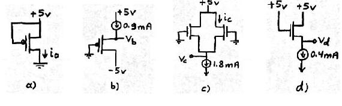
Yine |V_T| = 2 V, µ_nC_ox = 20 µA/V², W/L = 20/2; K = 0,1 mA/V², I_D = 0,1 (V_GS − V_T)².
- a) V_GS = 0, kesim: I_a = 0.
- b) PMOS doyumda: 0,9 = 0,1 (V_GS + 2)² ⇒ V_GS + 2 = ±3. +3 için V_GS = 1 V (PMOS'ta olanaksız), dolayısıyla V_GS = −5 V = V_b.
- c) Özdeş transistörlerle devre simetrik: I_D = 1,8/2 = 0,9 mA. 0,9 = 0,1 (V_GS − 2)² ⇒ V_GS = 5 V, V_c = −5 V.
- d) V_DS = V_GS, doyum: 0,4 = 0,1 (V_GS − 2)² ⇒ V_GS = 4 V, V_d = 5 − 4 = 1 V.
- e) MOS kapı sığalarının sıfır olduğu durumlar: kesimde C_GCS ve C_GCD; doğrusal bölgede C_GCB; doyumda C_GCB ve C_GCD sıfırdır.
Soru 3: R_D ve R_S
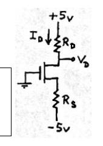
I_D = 0,4 mA ve V_D = 1 V isteniyor (V_T = 2 V, µ_nC_ox = 20 µA/V², L = 10 µm, W = 400 µm). V_DS = 1 + V_GS > V_GS − 2 olduğundan doyum: 0,4 × 10⁻³ = ½ × 20 × 10⁻⁶ × 40 × (V_GS − 2)² ⇒ (V_GS − 2)² = 1 ⇒ V_GS = 3 V (V_GS = 1 < V_T anlamsız). V_S = −3 V; R_S = (−3 + 5)/0,4 = 5 kΩ, R_D = (5 − 1)/0,4 = 10 kΩ.
Soru 4: R_x ve R_DS
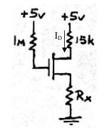
V_T = 1 V, k′(W/L) = 1 mA/V², V_D = 2 V isteniyor. I_G = 0 ⇒ V_G = 5 V; V_DG = −3 V ⇒ V_DS = V_GS − 3 < V_GS − 1, transistör doğrusal bölgede. I_D = 3 V / 15 kΩ = 0,2 mA. 0,2 = 1 × [(V_GS − 1)V_DS − V_DS²/2] ve V_GS = V_DS + 3'ten V_DS² + 4V_DS − 0,4 = 0 ⇒ V_DS = 0,0976 V (öteki kök −4,1 V geçersiz). V_S = 2 − 0,0976 = 1,9024 V ⇒ R_x = 1,9024 / 0,2 mA = 9,512 kΩ.
R_DS = [∂I_D/∂V_DS]⁻¹ = 1 / [k′(W/L)(V_GS − V_T − V_DS)] = 1 / [10⁻³ × (3,0976 − 1 − 0,0976)] ≈ 500 Ω.
2004 – 2. ara sınav (18.05.2004)
Soru 1
- a) Kendisiyle aynı yükü süren tersleyicide β = (W/L)_p/(W/L)_n büyüdükçe PMOS direnci azalır, pull-up akımı artar ve t_pLH azalır; t_pHL için tersi geçerlidir. t_p'nin en küçük değeri t_pHL = t_pLH noktasından daha küçük bir β'da oluşur; yani simetriyi biraz bozarak daha yüksek performans elde edilebilir.
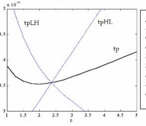
- b) PUN'da NMOS kullanılsaydı V_in = V_DD iken çıkış ancak V_DD − V_Tn'ye kadar yükselir (V_GS = V_Tn olunca NMOS kesime girer); PDN'de PMOS kullanılsaydı çıkış ancak |V_Tp|'ye kadar düşerdi. Bu nedenle rail-to-rail salınım için PUN PMOS'lardan, PDN NMOS'lardan oluşur.
- c) Uzun kanallı transistörde doyum akımı V_GS'nin karesiyle (quadratic), hız doyumundaki kısa kanallı transistörde ise V_GS ile doğrusal değişir; I_D–V_DS eğrileri arasındaki aralıklar bunu gösterir.
- d) Düşük besleme: enerji karesel olarak düşer ve belirli bir seviyeye kadar kazanç artar; ancak yaklaşık 4kT/q (~100 mV) seviyelerinden itibaren kapı karakteristiği bozulur ve kazanç 1'e iner. Performans düşer (özellikle düşük V_DD'de; V_DD ≫ V_T + V_DSAT/2 iken etki kaybolur). İç gürültü (örneğin crosstalk) ölçeklenip azalır ama dış gürültü ölçeklenmediğinden kapı dış gürültüye ve V_T gibi parametre değişimlerine daha duyarlı olur.
- e) P_dyn = C_L V_DD² P₀→₁ f. Azaltmak için: C_L'yi küçültmek (transistör boyutu, fan-out, kablo uzunluğu), V_DD'yi düşürmek, P₀→₁'i (anahtarlama aktivitesini) mantık ve mimari düzeyde azaltmak; saat frekansını düşürmek de gücü azaltır ama performansı kabul edilemez biçimde düşürdüğünden tercih edilmez.
- f) 2 girişli NOR'un RC modeli ve çıkışta 0→1 yaratan üç giriş değişimi:
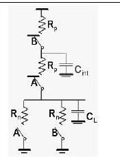
- A = 0, B = 1→0: önceden hem C_int hem C_L boşalmıştır; çıkış için ikisinin de dolması gerekir (en yavaş).
- A = 1→0, B = 0: önceden C_L boş, C_int doludur; yalnızca C_L dolar (en hızlı).
- A = 1→0, B = 1→0: C_L boştur, C_int'in durumu daha önceki girişlere bağlıdır; duruma göre (1) ya da (2) gibi davranır.
Soru 2 (20p): V_M = 2 V için W_n/W_p
V_DD = 5 V, V_Tn = −V_Tp = 1 V, C_ox = 5 fF/µm², L = 2,5 µm, λ = 0, µ_n = 50.000 mm²/Vs, µ_p = 25.000 mm²/Vs. V_M'de iki transistör de doyumdadır ve I_Dn = −I_Dp: 50 × 10⁻⁶ W_n = 100 × 10⁻⁶ W_p ⇒ W_n/W_p = 2.
Soru 3 (20p): Gecikme ve fan-out
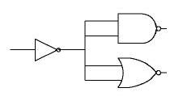
V_DD = 5 V, V_Tn = −V_Tp = 1 V, C_ox = 5 fF/µm², W = 2 µm, L = 1 µm, λ = 0, k′_n = 250 µA/V², k′_p = 125 µA/V², C_DB = 10 fF.
- a) I_DSATn = ½ × 250 × 10⁻⁶ × 2 × (5 − 1)² = 4 mA ⇒ R_eqn = (3/4)(V_DD/I_DSATn) = 0,75 × 5/4 kΩ = 937,5 Ω. Çıkış 4 kapı girişine (8 transistör) bağlı: C_G = W L C_ox = 10 fF, C_ext = 80 fF; C_int = 2C_DB = 20 fF; C_L = 100 fF. t_pHL = 0,69 × 937,5 × 100 fF = 64,7 ps. I_DSATp = 2 mA ⇒ R_eqp = 1,875 kΩ ⇒ t_pLH = 129,4 ps.
- b) En fazla 2 ns gecikme için en fazla kaç NAND/NOR bağlanabilir? Her kapı 4C_G ekler: 0,69 × 1,875 × 10³ × (20 + 40N) × 10⁻¹⁵ ≤ 2 × 10⁻⁹ ⇒ N = 38.
Soru 4 (15p): Karmaşık CMOS kapı
F = [(A′ + B′)(C′ + D′ + E′) + F′]·G′ işlevini gerçekleştiren CMOS devreyi çiziniz; pull-up ve pull-down dirençleri (W/L)_n = 2, (W/L)_p = 6 olan bir tersleyicininkine eşit olacak biçimde boyutlandırınız.
De Morgan ile ifade [F(AB + CDE) + G]′ olarak yazılır ve PUN ile PDN birbirinin çiftdeşi (dual) olarak kurulur.
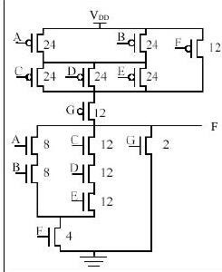
G girişinin NMOS'u tersleyicidekiyle aynı ölçekte (W/L = 2), PMOS'u ise iki kat büyütülmüştür (W/L = 12). Şekildeki değerlerin yarısı da doğru kabul ediliyordu. (Puanlar: 1a–e 7p, 1f 10p; 2. ve 3. soru 20p; 4. soru 15p; süre 120 dk.)
2005 – 1. ara sınav (11.04.2005)
Soru 1
- a) Moore yasası: Gordon Moore 1960'larda bir die üzerine tümleştirilebilecek transistör sayısının her 14–18 ayda ikiye katlanacağını öngördü.
- b) Die yield, bir wafer'dan çıkan sağlam yonga oranıdır: Die yield = [1 + (birim alandaki kusur × die alanı)/α]^(−α). Die maliyeti = wafer maliyeti / (wafer başına die × die yield); wafer başına die ≈ π (wafer çapı/2)² / die alanı.
- c) ve d) 2004 ara sınavındaki kanal boyu modülasyonu ve diyot–sıcaklık sorularının aynısı.
- e) V_M'de iki transistör de doyumdadır: V_in = V_out olduğundan her ikisinde V_DS = V_GS ve doyum koşulları sağlanır.
Soru 2 (25p): Ölçümlerden model parametreleri
Deep-submicron bir transistörde unified model geçerli; V_DSAT = −1 V, −2φ_F = −0,6 V.
| Ölçüm | V_GS (V) | V_DS (V) | V_SB (V) | I_D (µA) | Bölge (yanıt) |
|---|---|---|---|---|---|
| 1 | −2,5 | −2,5 | 0 | −84,375 | hız doyumu |
| 2 | 1 | 1 | 0 | 0 | kesim |
| 3 | −0,7 | −0,8 | 0 | −1,04 | doyum |
| 4 | −2 | −2,5 | 0 | −56,25 | hız doyumu |
| 5 | −2,5 | −2,5 | −1 | −72 | hız doyumu |
| 6 | −2,5 | −1,5 | 0 | −80,625 | hız doyumu |
| 7 | −2,5 | −0,8 | 0 | −66,56 | doğrusal |
- a) Negatif V_GS, V_DS ile negatif I_D aktığından transistör PMOS'tur (min operatörü PMOS için max olur).
- b) 1. ve 4. ölçümler (V_SB = 0, ikisi de hız doyumunda) oranlanırsa: 1,5 = (2 + V_T0)/(1,5 + V_T0) ⇒ V_T0 = −0,5 V.
- c) 1. ve 5. ölçümlerden −72(2 + V_T0) = −84,375(2 + V_T) ⇒ V_T = −0,72 V; −0,72 = −0,5 + γ(√1,6 − √0,6) ⇒ γ = −0,45.
- d) 1. ve 6. ölçümlerden −84,375(1 − 2,5λ) = −80,625(1 − 1,5λ) ⇒ λ = −0,05 V⁻¹.
Soru 3 (25p): Gövde etkisi
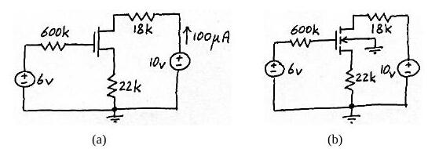
k_n = 25 µA/V², γ = 0,5 V^½. (a) devresinde I_D = 100 µA ölçülüyor. Doyum varsayımıyla V_GS = 6 − 22000 I_D = 3,8 V; 100 = 25/2 (3,8 − V_T0)² ⇒ V_T0 = 1 V; V_DS = 10 − 40000 × 100 µA = 6 V > V_GS − V_T0, varsayım doğru. (b)'de V_SB ≠ 0 olduğundan V_GS = 6 − 22000 I_D, V_SB = 22000 I_D, V_T = V_T0 + γ(√(|2φ_F| + V_SB) − √|2φ_F|), I_D = k_n/2 (V_GS − V_T)² denklemleri iterasyonla çözülür; sonuçlar yaklaşık I_D = 88 µA, V_T = 1,409 V, V_DS = 6,48 V.
Soru 4 (25p)
- a) Lateral diffusion: C_GCD = 0,25 fF, C_G = 0,7 fF, L = 0,25 µm ⇒ C_oxWL = 0,5 fF, C_oW = 0,1 fF, C_oxW = 2 fF/µm ⇒ x_d = 0,05 µm.
- b) Aşağıdaki devrede (k_n = 250 µA/V², V_T = 1 V) I_D ve V_DS:
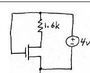
V_GS = V_DD = 4 V. Doyum varsayımı I_D = 1,13 mA, V_DS = 2,19 V verir; ama V_GS − V_T = 3 V > V_DS olduğundan geçersizdir. Doğrusal bölgede 4 − V_DS = 1600 × 250 × 10⁻⁶ (3 − V_DS/2) V_DS ⇒ V_DS² − 11V_DS + 20 = 0 ⇒ V_DS = 2,3 V (8,7 V > V_DD geçersiz), I_D = 1,06 mA.
- c) 7 özdeş tersleyicili halka osilatörü 2,38 GHz'de salınıyor: T = 1/f = 2 t_p N ⇒ t_p = 1/(2 × 2,38 × 10⁹ × 7) = 30 ps.
(Puanlar: 1. soru 25p, 2. soru 25p, 3. soru 25p, 4. soru 25p; süre 100 dk.)
2006 – Ara sınav (10.04.2006)
Soru 1
- a) 1970'ler ve 1980'lerin başında egemen olan NMOS, yerini CMOS'a bıraktı. NMOS mantıkta çıkış düşükken kaynaktan sürekli akım çekiliyor, ısı sorunu tümleştirme yoğunluğunu sınırlıyordu. CMOS'ta kararlı durumda besleme ile toprak arasında yol olmadığından statik güç tüketilmez; aynı alana çok daha büyük devreler sığdırılabildi.
- b) Soketteki bir PMOS'un drain ve source bacakları ters takılırsa devrenin işleyişinde hiçbir şey değişmez; iki bölge fiziksel olarak aynıdır ve uygulanan gerilime göre drain ya da source işlevi görür.
- c) Yüksek pazar payında en aza indirilecek maliyetler: die ve paketleme (2004 sorusunun aynısı).
- d) MOS transistör doyumda ideal akım kaynağı gibidir (I_D, V_DS'den bağımsız). Pratikte kanal boyu modülasyonu nedeniyle I_D = I_D′ (1 + λV_DS) olur; uzun kanallı transistörler ideal akım kaynağına daha yakındır.
- e) Body effect: tümleşik devrelerde gövde ortaktır ve en negatif (NMOS) ya da en pozitif (PMOS) noktaya bağlanır. V_SB ters kutuplandığında kanal çevresindeki kıtlık bölgesi genişler, kanal derinliği azalır; bunu karşılamak için daha büyük V_GS gerekir, yani V_T artar.
Soru 2: W/L ve akım
Transistör parametreleri: V_T0 = 0,4 V, γ = 0,48 V^½, k′ = 430 µA/V², λ = 0,01 V⁻¹, 2φ_F = −0,74 V, V_DSAT = 4,5 V. Ölçüm: V_G = 2,8 V, V_D = 5 V, V_S = 1 V, V_B = 0 V, I_D = 0,623 mA.
- a) V_SB = 1 V ⇒ V_T = 0,4 + 0,48 (1,32 − 0,86) = 0,62 V. V_GS = 1,8 V, V_GS − V_T = 1,18 V; V_DS = 4 V > 1,18 V ⇒ doyum. 0,623 × 10⁻³ = (430 × 10⁻⁶/2)(W/L)(1,18)²(1 + 0,01 × 4) ⇒ W/L = 2.
- b) V_G = 5, V_D = 4, V_S = 2, V_B = 1 V: V_SB = 1 V ⇒ V_T = 0,62 V; V_GS − V_T = 2,38 V > V_DS = 2 V ⇒ doğrusal: I_D = 430 × 10⁻⁶ × 2 × [2,38 × 2 − 4/2] = 2,37 mA.
Soru 3: Direnç yüklü tersleyici
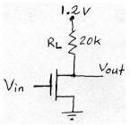
Aynı transistör (W/L = 2) bu devrede; V_in rail-to-rail. V_in = 0 iken I_D = 0, V_OH = V_DD = 1,2 V. V_in = 1,2 V'ta doğrusal bölge varsayımıyla (1,2 − V_out)/20 kΩ = 860 × 10⁻⁶ [(1,2 − 0,4) V_out − V_out²/2] ⇒ 8,6 V_out² − 14,76 V_out + 1,2 = 0 ⇒ V_out = 1,6 V (anlamsız, > V_DD) ya da V_OL = 0,08 V. Kontrol: 0,08 < 1,2 − 0,4 olduğundan doğrusal bölge varsayımı doğrudur.
Soru 4: Eşdeğer direnç
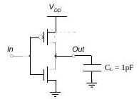
V_in uzun süre 0 V'tan sonra aniden V_DD = 5 V oluyor; NMOS'un I_Dsat = 5 mA ve doyuma girdiği anda V_Dsat = 4 V.
- a) C_L önce V_DD'ye dolmuştur; V_in = 5 V olunca V_DS = V_GS = 5 V, NMOS doyumda. Doyum sınırında V_DS = V_GS − V_T ⇒ 4 = 5 − V_T ⇒ V_T0n = 1 V; k_n = 2I_Dsat/(V_GS − V_T0n)² = 2 × 5 × 10⁻³ / 16 = 0,625 × 10⁻³ A/V².
- b) t_pHL = 0,69 R_eqn C_L = 1,725 ns ⇒ R_eqn = 2,5 kΩ.